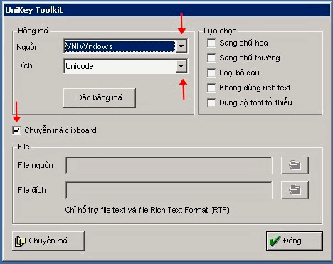

BuddhaSasana
Vietnamese Buddhist Page, with Unicode
Times font
Hoán chuyển văn bản với UniKey, trong MS Word
Bình Anson
(14-02-2004)-ooOoo-
Để hoán chuyển văn bản A (font VNI) sang văn bản B (font Unicode), trong phần mềm xử lý văn bản Microsoft Word và chương trình gõ chữ Việt của UniKey (http://unikey.sourceforge.net), thực hiện quy trình sau:
1) Khởi động UniKey (version 3.55, hay mới hơn), rồi Click vào nút "Đóng"
Unikey sẽ chạy xuống thanh Menu dưới màn hình, và hiện ra chữ V màu đỏ (V: Vietnamese). Nếu hiện ra chữ E (E: English) thì click vào đó, để đổi sang chữ V.
2) Khởi động Word
3) Đem văn bản A vào trong Microsoft Word. Rồi bôi đen (highlight) đoạn văn muốn hoán chuyển.
Nếu muốn hoán chuyển toàn thể văn bản:
- Bấm Ctrl-A, hay
- Click vào thanh Menu của Word: Edit --> Select All4) Copy đoạn bôi đen đó vào Clipboard:
- Bấm Ctrl-C, hay
- Click vào thanh Menu của Word: Edit --> Copy5) Vận hành với Unikey:
Đưa con trỏ của chuột xuống dưới màn hình, chỉ vào chữ V màu đỏ, rồi bấm nút chuột phải (right-click).
Sau đó, bấm nút chuột trái (left-click) ở: Công cụ ... [CS+F6]
6) Cửa sổ sau đây sẽ hiện ra:

Soát và chọn các tham số trong cửa sổ nầy:
- Bảng mã, Nguồn: VNI Windows -- Đích: Unicode
- Tick mark ở ô "Chuyển mã Clipboard"7) Xong xuôi, click vào nút "Chuyển mã", ở góc trái, bên dưới:
8) Chương trình UniKey sẽ hoạt động vài giây, hoán chuyển văn bản lưu tại Clipboard, từ dạng VNI sang dạng Unicode. Văn bản mới được tạo ra, dạng font Unicode, tạm thời lưu tại Clipboard.
- Một cửa sổ nhỏ hiện ra, với dòng chữ: Sucessfully converted RTF clipboard
- Click vào nút OK để đóng cửa sổ đó .9) Sau khi chuyển mã xong, đóng chức năng nầy bằng cách Click vào nút "Đóng", ở góc phải, bên dưới:
10) Trở lại Word:
- Mở ra một văn bản mới : File --> New --> Blank document
- Dán văn bản Unicode từ Clipboard vào trang mới trong Word: Edit -->Paste hay bấm Ctrl-V
- Bôi đen toàn thể văn bản, chỉ định font mới là Times New Roman.
- Lưu (Save File) với một tên mới .11) Thực hiện quy trình tương tự, để hoán chuyển các bảng mã font khác.
Thật ra, quy trình nầy là để hoán chuyển trong Clipboard, nghĩa là có thể vận hành tương tự với các phần mềm xử lý văn bản khác (WordPad, FrontPage, Outlook, v.v.) nếu tương thích với chuẩn Unicode.
Ngoài ra, UniKey còn có chức năng hoán chuyển các văn bản trong dạng Text và RTF (Rich Text Format). Xin xem thêm phần "Hướng dẫn" của UniKey.
-ooOoo-
[Back to the Main Page - Trở về Trang Chính]
| last updated: 14-04-2004 |
Web master: binh_anson@yahoo.com |